|
Cristiano Ronaldo dos Santos Aveiro |
| a Portuguese professional footballer | |
| February 5, 1985 (age 41 years) | |
| Al-Nassr FC / Portugal national football team |
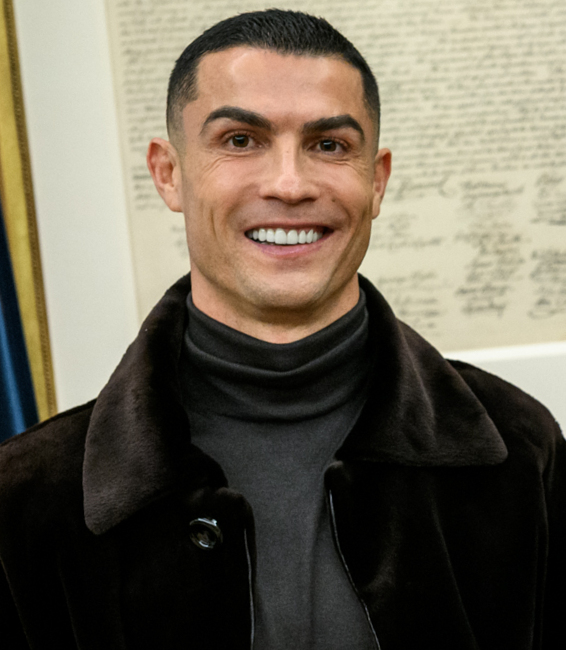
Cristiano Ronaldo dos Santos Aveiro[a] (born 5 February 1985), nicknamed CR7, is a Portuguese professional footballer who plays as a forward for and captains both Saudi Pro League club Al-Nassr and the Portugal national team. Widely regarded as one of the greatest players in history, he has won numerous individual accolades throughout his career, including five Ballon d'Ors, a record three UEFA Men's Player of the Year Awards, and four European Golden Shoes. He was also named the world's best player five times by FIFA.[note 3] He has won 35 trophies in his career, including five UEFA Champions Leagues and the UEFA European Championship. He holds the records for most goals (140) and assists (42) in the Champions League, goals (14) and assists (8) in the European Championship, and most international appearances (227) and international goals (143). He is the only player to have scored 100 goals with four different clubs. He has made over 1,300 professional career appearances, the most by an outfield player, and has scored over 970 official senior career goals for club and country, making him the top goalscorer of all time.
Born in Funchal, Madeira, Ronaldo began his career with Sporting CP before signing with Manchester United in 2003. He became a star player at United, where he won three consecutive Premier League titles, the Champions League, and the FIFA Club World Cup. His 2007–08 season earned him his first Ballon d'Or at age 23. In 2009, Ronaldo became the subject of the then-most expensive transfer in history when he joined Real Madrid in a deal worth €94 million (£80 million). At Madrid, he was at the forefront of the club's resurgence as a dominant European force, helping them win four Champions Leagues between 2014 and 2018, including the long-awaited La Décima. He also won two La Liga titles, including the record-breaking 2011–12 season in which Madrid reached 100 points, and became the club's all-time top goalscorer. He won Ballon d'Ors in 2013, 2014, 2016 and 2017, and was runner-up three times to Lionel Messi, his perceived career rival. Following issues with the club hierarchy, Ronaldo signed for Juventus in 2018 in a transfer worth an initial €100 million, where he was pivotal in winning two Serie A titles. In 2021, he returned to United before joining Al-Nassr in 2023.
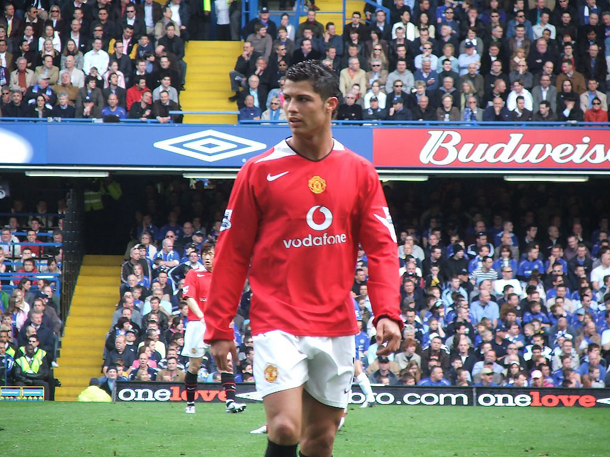
On 12 August 2003, less than a week after the friendly that impressed Ferguson, Manchester United signed Ronaldo for £12 million,[50] an England record for a teenager.[51] This also made him the first Portuguese player to sign for the club.[52].Although he requested the number 28, his number at Sporting, he received the squad number 7 shirt, which had previously been worn by such United players as George Best, Eric Cantona and David Beckham.[53] Wearing the number 7 became an extra source of motivation for Ronaldo.[54] A key element in his development during his time in England proved to be Ferguson, of whom he later said: "He's been my father in sport, one of the most important and influential factors in my career."[55]
Ronaldo made his debut as a substitute in a 4–0 home win over Bolton Wanderers in the Premier League on 16 August 2003.[56] His performance earned praise from Best, who hailed it as "undoubtedly the most exciting debut" he had ever seen.[49] Ronaldo scored his first goal for Manchester United with a free-kick in a 3–0 win over Portsmouth on 1 November.[57] On 15 May 2004, in a victory against Aston Villa, Ronaldo scored the opening goal and later received the first red card of his career.[58][59] Ronaldo ended his first season in English football with a trophy, scoring the opening goal in United's 3–0 win over Millwall in the 2004 FA Cup Final.[60] BBC pundit Alan Hansen described him as the star of the final.[61] The British press had been critical of Ronaldo during the season for his "elaborate" step-overs in trying to beat opponents,[62] but teammate Gary Neville said he was "not a show pony, but the real thing", and predicted he would become a world-class player.[63]
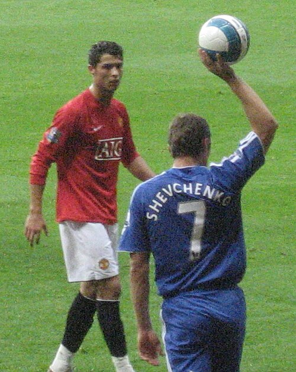
In the 2006–07 season, he amassed a host of personal awards for the season, winning the Professional Footballers' Association's Player's Player, Fans' Player, Young Player of the Year awards, and the Football Writers' Association's Footballer of the Year award,[74][75] becoming the first player to win all four main PFA and FWA honours.[76] Ronaldo was named runner-up to Kaká for the 2007 Ballon d'Or,[77] and came third, behind Kaká and Lionel Messi, in the running for the 2007 FIFA World Player of the Year award.[78] Ronaldo scored his first hat-trick for United in a 6–0 win against Newcastle United on 12 January 2008.[79] His 31 league goals earned him the Premier League Golden Boot,[80] as well as the European Golden Shoe, which made him the first winger to win the latter award.[81] He additionally received the PFA Players' Player of the Year and FWA Footballer of the Year awards for the second consecutive season.[82][83] United reached the final against Chelsea in Moscow on 21 May, where, despite his opening goal being negated by an equaliser and his penalty kick being saved in the shoot-out,[84] United emerged victorious, winning 6–5 on penalties after a 1–1 draw at the end of 120 minutes.[85][86] As the Champions League top scorer, Ronaldo was named the UEFA Club Footballer of the Year.[87] With his 2008 Ballon d'Or and 2008 FIFA World Player of the Year, Ronaldo became United's first Ballon d'Or winner since Best in 1968,[88] and the first Premier League player to be named the FIFA World Player of the Year.[89] Shortly after, Ronaldo was linked to a move to Real Madrid, United filed a tampering complaint with governing body FIFA over Madrid's alleged pursuit of their player, but they declined to take action.[90] and he remained at United for another year.[91] His match-winning goal in the second leg against Porto, a 40-yard strike, earned him the inaugural FIFA Puskás Award, presented by FIFA in recognition of the best goal of the year;[92] he later called it the best goal he had ever scored.[93] United advanced to the final in Rome,[94] where he made little impact in United's 2–0 defeat to Barcelona.[95]
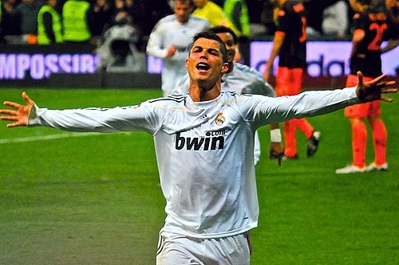
In 2009, Ronaldo transferred to Real Madrid for a then world record £80 million.[96] At least 80,000 fans attended his presentation at the Santiago Bernabéu, surpassing the 25-year record of 75,000 fans who had welcomed Diego Maradona at Napoli.[97] Ronaldo said, "This is the completion of my boyhood dream, to be a Real Madrid player."[98] Ronaldo made his La Liga debut against Deportivo La Coruña on 29 August, scoring a penalty in a 3–2 home win.[99] He scored in each of his first four league games, the first Madrid player to do so.[100] His first Champions League goals for the club followed with two free kicks in the first group match against Zürich.[101] His strong start to the season was interrupted when he suffered an ankle injury in October while on international duty, which kept him sidelined for seven weeks.[102][103] Despite scoring 33 goals in all competitions and contributing to Real Madrid's 96 points in La Liga, his first season with Madrid ended trophyless.[104] Ronaldo scored 46 league goals during the La Liga championship success in his third season in Spain. Following Raúl's departure, Ronaldo was given No. 7 for the 2010–11 season and scored 53 goals, helping Madrid win the Copa del Rey, scoring the winning goal against rivals Barcelona in the El Clásico, his first trophy with Madrid.[105] He also became the first player in La Liga to score 40 goals.[106] In addition to the Pichichi Trophy, Ronaldo won the European Golden Shoe for a second time, becoming the first player to win the award in different leagues.[107]
The following season saw Ronaldo score 60 goals across all competitions,[108] leading Madrid to their first league title in four years with a record 100 points and his runner-up finish to Lionel Messi in the 2011 FIFA Ballon d'Or.[109] He scored his 100th league goal for Madrid in a 5–1 win over Real Sociedad on 24 March 2012, breaking the previous club record held by Ferenc Puskás.[110] In the 2012–13 season, he scored his first hat-trick in the Champions League in a 4–1 win over Ajax.[111] Four days later, he became the first player to score in six successive Clásicos when he hit a brace in a 2–2 draw at Camp Nou.[112] His performances again saw Ronaldo voted second in the running for the 2012 FIFA Ballon d'Or, behind four-time winner Messi.[113] Following the 2012–13 winter break, Ronaldo captained Madrid for the first time in an official match, scoring twice to lift 10-man Madrid to a 4–3 win over Sociedad on 6 January.[114] He subsequently became the first non-Spanish player in 60 years to captain Madrid in El Clásico on 30 January, a match which also marked his 500th club appearance.[115] In 2013–14 season, Ronaldo was joined at the club by winger Gareth Bale and together with striker Karim Benzema, they formed an attacking trio popularly dubbed "BBC", an acronym of Bale, Benzema and Cristiano, and a play on the name of the British public service broadcaster, the British Broadcasting Corporation (BBC).[116] He continued prolific scoring, with 69 goals in 2013, winning the 2013 FIFA Ballon d'Or,[117] and the FIFA World Player of the Year award, for the first time in his career.[118] Concurrently with his individual achievements, Ronaldo enjoyed his greatest team success in Spain to date, as he helped Madrid win La Décima, their tenth European Cup, scoring a penalty in the 120th minute of the 4–1 final win over city rivals Atlético Madrid, becoming the first player to score in two European Cup finals for two different winning teams.[119] As the competition's top goalscorer for the third time, with a record 17 goals,[120] he was named the UEFA Best Player in Europe.[121] Ronaldo scored 31 goals in 30 league games, which earned him the Pichichi and the European Golden Shoe, along with Liverpool's Luis Suárez.[122] On 4 May, Ronaldo scored a back-heeled volley in the closing moments of the match against Valencia, voted goal of the season by the Liga Nacional de Fútbol Profesional (LFP),[123] giving him the Best Player in La Liga award.[124]During the 2014–15 season, Ronaldo set a new personal best of 61 goals, and after winning the 2014 FIFA Club World Cup,[125] Ronaldo received the 2014 Ballon d'Or,[126] joining Johan Cruyff, Michel Platini and Marco van Basten as a three-time recipient.[127] Madrid finished in second place in La Liga and exited at the semi-final stage in the Champions League.[128] With 10 goals, he finished as top scorer for a third consecutive season, alongside Messi and Neymar.[129] On 5 April, he scored five goals in a game for the first time in his career, including an eight-minute hat-trick, in a 9–1 rout of Granada.[130] His 300th goal for his club followed three days later in a 2–0 win against Rayo Vallecano.[131] He finished the season with 48 goals, winning a second consecutive Pichichi and the European Golden Shoe for a record fourth time.[132]
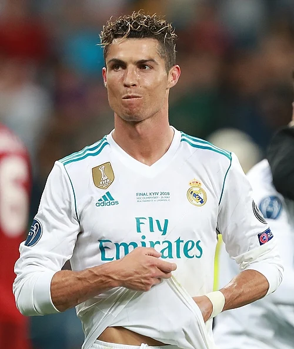
Cristiano Ronaldo became Real Madrid's all-time top scorer on 12 September 2015 against Espanyol, netting 230 goals in 203 matches, surpassing the previous record holder, Raúl.[133] Ronaldo also became the all-time top scorer in the Champions League with a hat-trick in the first group match against Shakhtar Donetsk, having finished the previous season level with Messi on 77 goals.[134] Two goals against Malmö FF in a 2–0 away win on 30 September saw him reach the milestone of 500 career goals for club and country.[135] He won the 2016 Ballon d'Or, his fourth, and the inaugural 2016 The Best FIFA Men's Player, a revival of the former FIFA World Player of the Year, largely owing to his success with Portugal in winning Euro 2016.[136]In the 2016–17 UEFA Champions League quarter-finals against Bayern in April, Ronaldo scored both goals in a 2–1 away win which saw him make history by becoming the first player to reach 100 goals in UEFA club competition.[137] On 17 May, Ronaldo overtook Jimmy Greaves as the all-time top scorer in the top five European leagues, scoring twice against Celta de Vigo.[138] He finished the season with 42 goals in all competitions as he helped Madrid to win their first La Liga title since 2012.[139] In the Champions League Final, Ronaldo scored two goals in a 4–1 victory over Juventus to take him to 12 goals for the season, making him the competition's top goalscorer for the fifth straight season (sixth overall), as well as the first player to score in three finals in the Champions League era; the second goal was the 600th of his senior career.[140] Madrid also became the first team to win back-to-back finals in the Champions League era.[141] On 23 October, his performances throughout 2017 saw him awarded The Best FIFA Men's Player award for the second consecutive year.[142] A day later, Ronaldo won the 2017 Ballon d'Or, receiving his fifth-time award on the Eiffel Tower in Paris.[143] On 3 April 2018, Ronaldo scored the first two goals in a 3–0 away win against Juventus in the quarter-finals of the 2017–18 UEFA Champions League, with his second goal being an acrobatic bicycle kick. Described as a "PlayStation goal" by Juventus defender Andrea Barzagli, with Ronaldo's foot approximately 7 ft 7 in (2.31 m) off the ground, it garnered him a standing ovation from the opposing fans in the stadium as well as a plethora of plaudits from peers, pundits and coaches.[144] In the final on 26 May, Madrid defeated Liverpool 3–1, winning Ronaldo his fifth Champions League title, the first player to do so.[145] He finished as the top scorer of the tournament for the sixth consecutive season with 15 goals.[146] After the final, Ronaldo referred to his time with Madrid in the past tense, sparking speculation that he could leave the club.[147]
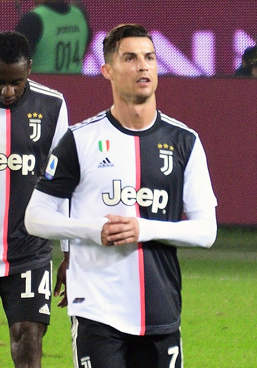
Ronaldo joined Juventus in 2018 for €100 million, the transfer was the highest ever for a player over 30 years old and the highest paid by an Italian club.[148] Upon signing, Ronaldo cited his need for a new challenge as his rationale for departing Madrid,[149] but later attributed the transfer to the lack of support he felt was shown by club president Florentino Pérez.[150] On 18 August, Ronaldo made his debut in a 3–2 away win against Chievo Verona.[151] On 19 September, in his first Champions League match for Juve, he was sent off against Valencia, his first red card in 154 Champions League appearances.[152] In the reverse (home) leg against Valencia, Cristiano won 100 Champions League matches, becoming the first ever player to do so.[153] Ronaldo won his first trophy with the club on 16 January 2019, the 2018 Supercoppa Italiana, after he scored the only goal from a header against AC Milan.[154] On 10 February, Ronaldo scored in a 3–0 win over Sassuolo, the ninth consecutive away game in which he had scored in the league, equalling Giuseppe Signori's single season Serie A record of most consecutive away games with at least one goal.[155] On 12 March, Ronaldo scored a hat-trick in a 3–0 home win against Atlético in the second leg of the Champions League round of 16, helping Juventus overcome a two-goal deficit to reach the quarter-finals.[156] On 20 April, Ronaldo played in the scudetto clinching game against Fiorentina, as Juventus won their eighth successive title after a 2–1 home win, thereby becoming the first player to win league titles in England, Spain and Italy.[157] With 21 goals and eight assists, Ronaldo won the league award for Most Valuable Player.[158] On 1 October, he reached several milestones in Juventus's 3–0 Champions League group stage win over Bayer Leverkusen including breaking Iker Casillas' record for most Champions League wins of all time.[159] On 18 December, Ronaldo leapt to a height of 8 ft 5 in (2.57 m), higher than the crossbar, to head the winning goal in a 2–1 away win against Sampdoria.[160] He scored his first Serie A hat-trick on 6 January 2020, in a 4–0 home win against Cagliari and became only the second player to score hat-tricks in the Premier League, La Liga and Serie A.[161] On 22 February, Ronaldo scored for a record-equalling 11th consecutive league game, alongside Gabriel Batistuta and Fabio Quagliarella, in what was his 1,000th senior professional game, a 2–1 away win against SPAL.[162] On 22 June, he scored a penalty in a 2–0 away win over Bologna, overtaking Rui Costa to become the highest scoring Portuguese player in Serie A history.[163] On 20 July, Ronaldo scored twice in a 2–1 home win over Lazio; his first goal was his 50th in Serie A. He became the first player in history to reach 50 goals in the Premier League, La Liga and Serie A, and becoming the second player after Edin Džeko to score 50 goals in three of Europe's top five major leagues.[164] Moreover, he became the oldest player, at the age of 35 years and 166 days, to score over 30 goals in one of the five top European leagues since Ronnie Rooke with Arsenal in 1948.[165] On 26 July, Ronaldo scored the opening goal in a 2–0 home win over Sampdoria as Juventus were crowned Serie A champions for a ninth consecutive time.[166] On 7 August, Ronaldo scored a brace in a 2–1 home win against Lyon in the second leg of the Champions League round of 16, which saw him finish the season with 37 goals in all competitions; the tally allowed him to break Borel's club record of 36 goals in a single season.[167]
Ronaldo played his 100th match in all competitions for Juventus on 13 December, scoring two penalties in a 3–1 away win over Genoa in the league to bring his goal tally to 79.[168] On 2 March 2021, he scored a goal in a 3–0 win over Spezia in his 600th league match, to become the first player to score at least 20 goals in 12 consecutive seasons in the top five leagues of Europe.[169] On 12 May, Ronaldo scored a goal in a 3–1 away win over Sassuolo to reach his 100th goal for Juventus in all competitions on his 131st appearance, becoming the fastest Juventus player to achieve the feat.[170] With Juventus's victory in the 2021 Coppa Italia Final on 19 May, Ronaldo became the first player in history to win every major domestic trophy in England, Spain and Italy.[171] Ronaldo ended the season with 29 league goals, winning the Capocannoniere award for highest goalscorer and becoming the first footballer to finish as top scorer in the English, Spanish and Italian leagues.[172] The start of the following season came amid reports Ronaldo would depart the club before the closure of the transfer window,[173] despite Ronaldo and his agent Jorge Mendes reaching a verbal agreement with Manchester City over personal terms,[174] but the club pulled out of the deal,[175] and later it was confirmed that City's rivals Manchester United, Ronaldo's former club, were in advanced talks to sign him,[176][177] while former manager Alex Ferguson and several ex-teammates had been in contact to persuade him to re-sign for United.[178][179]
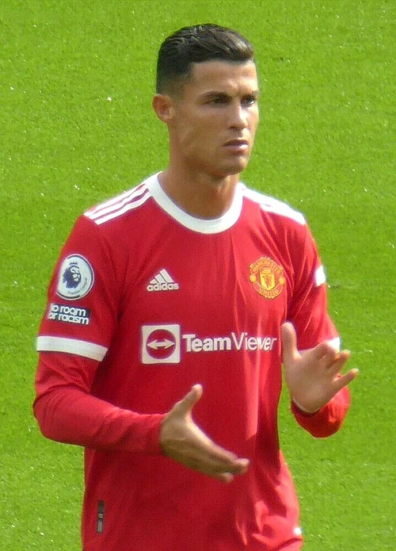
On 27 August 2021, Manchester United announced they had reached an agreement with Juventus to re-sign Ronaldo, subject to agreement of personal terms, visa and medical.[180][181] Ronaldo was given the number 7 shirt after Edinson Cavani agreed to switch to 21.[182] The first 24 hours of Ronaldo's shirt sales was reported to have broken the all-time record following a transfer, overtaking Messi after his move to Paris Saint-Germain.[183] On 11 September, Ronaldo made his second debut at Old Trafford, scoring the opening two goals in a 4–1 league victory against Newcastle United.[184] On 29 September, he scored a last-minute winner in United's 2–1 victory at home to Villarreal in the Champions League, and overtook Iker Casillas as the player with the most appearances in the competition.[185] Ronaldo proved to be crucial in the next Champions League fixtures, scoring various last-minute goals to help United qualify for the round of 16 as group winners.[186] On 2 December, Ronaldo netted two goals in a 3–2 home league win against Arsenal, which saw him surpass 800 career goals.[187] Struggles ensued, with a fractured relationship with his teammates and interim manager, continuing for two months,[188] until he scored in United's 2–0 win at home versus Brighton & Hove Albion on 15 February 2022, his first in the new year.[189] He finished the season with 24 goals in all competitions being named in the Premier League Team of the Year and the winner of United's Sir Matt Busby Player of the Year award,[190][191] but United finished in a disappointing sixth place and qualified for the UEFA Europa League; as a result, Ronaldo went trophyless for the first time since 2010.[192] After growing dissatisfaction with the direction of United on and off the field, Ronaldo desired to leave to join a club competing in the Champions League, but a move failed to materialise, with various European clubs refusing a transfer, due to his age, overall cost of a transfer and high wage demands.[193][194] Shortly after, he fell out with manager Erik ten Hag who used him as a substitute, leading United to terminate his contract on 22 November, following an interview with Piers Morgan, where Ronaldo said that he felt "betrayed" by Ten Hag and criticised the management of the club.[195]
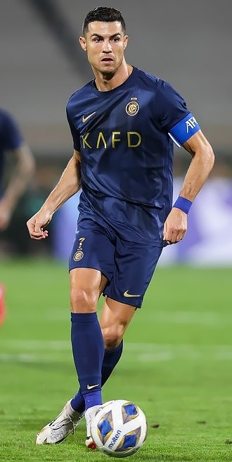
On 30 December 2022, Saudi Arabian club Al-Nassr reached an agreement for Ronaldo to join the club, signing a contract until 2025.[196] Ronaldo received the highest football salary ever, at €200 million per year,[197][198] including a guaranteed football salary of €90 million, with commercial and sponsorship deals bringing his total annual salary to €200 million. He made his debut for Al-Nassr on 22 January 2023, as club captain, playing the full 90 minutes of a 1–0 win over Al-Ettifaq,[199] and scored his first goal in a 2–2 draw against Al-Fateh by converting a last-minute penalty.[200] On 9 February, Ronaldo scored all four goals in a 4–0 win over Al-Wehda, his first goal of the match being his 500th career league goal.[201] According to the BBC, Ronaldo's transfer to Al-Nassr led a "revolution" in Asian football, with many players from other leagues, particularly those in Europe, transferring to Saudi Pro League clubs for the 2023–24 season.[202][203][204] In the final of the Arab Club Champions Cup on 12 August, Ronaldo scored both goals as they defeated rivals Al-Hilal 2–1 after extra time. Ronaldo scored six goals in the competition.[205] At the close of the year, Ronaldo scored 54 goals in all competitions for Al-Nassr and Portugal, making him the outright top scorer in 2023, reaching the same goalscoring record as in 2016.[206][207] On 27 May 2024, in Al-Nassr's home fixture against Al-Ittihad, Ronaldo scored his 34th and 35th league goals of the campaign, surpassing Abderrazak Hamdallah's record for the most goals scored in a single Saudi Pro League season. He also became the first footballer to finish as top scorer in four different leagues: the English, Spanish, Italian and Saudi leagues.[208] On 31 May, in a 5–4 penalty shoot-out defeat to Al-Hilal in the 2024 King Cup final following a 1–1 draw after extra time (in which he scored his side's second spot kick), he equalled Rogério Ceni's record for most top-level matches by a male professional footballer (1,225).[209] Ronaldo finished the 2024–25 season with 25 league goals, becoming the league's top scorer for a second consecutive time.[210] In the 2025–26 season, Ronaldo won the Saudi Pro League with Al-Nassr.
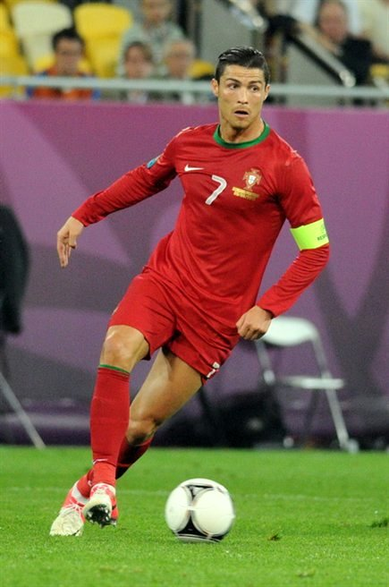
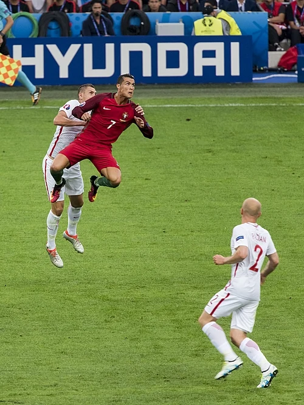
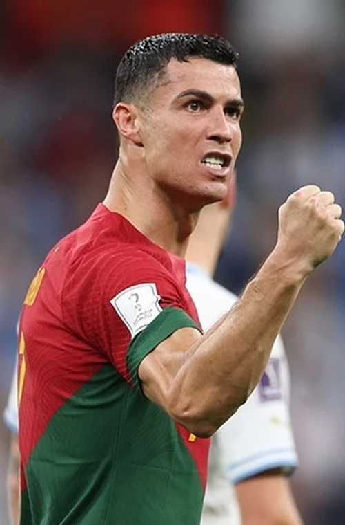
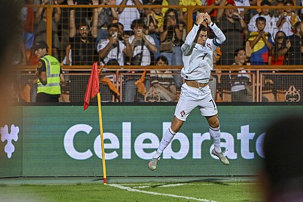
Ronaldo has adopted several goal celebrations throughout his career, including one particular celebration which gained widespread coverage in the media, when he squatted and stared directly into a camera on the sidelines of the pitch with his hand on his chin.[308][309][310] After scoring a goal, he usually celebrates with a "storming jump" and "turn", before "landing in spread-eagled fashion"[309] into his "signature power stance",[310] while usually simultaneously exclaiming "Sí" (Spanish and Italian for "yes").[308][311] This trademark celebration has been dubbed the "Siu" or "siuuu" in the media.[308][309][312] The gesture was first performed by Ronaldo on 7 August 2013, during the 2013 International Champions Cup Final between Real Madrid and Chelsea.[313] During an interview after the match, Ronaldo explained he scored the goal and "it just felt natural" and "didn't know where it came from". He started doing it more often and when the supporters see it they are reminded of him.[314] The phrase "siu" is derived from Portuguese sim, meaning "yes". This was confirmed by Ronaldo in an interview in 2023, almost a decade since he first performed it. Ronaldo explained that the phrase "Siuuu" simply means yes, but "meaning it very strongly".[315]
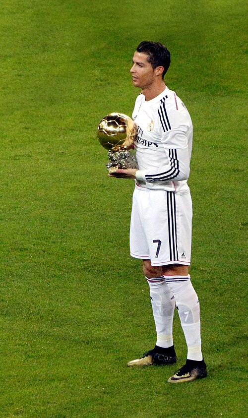